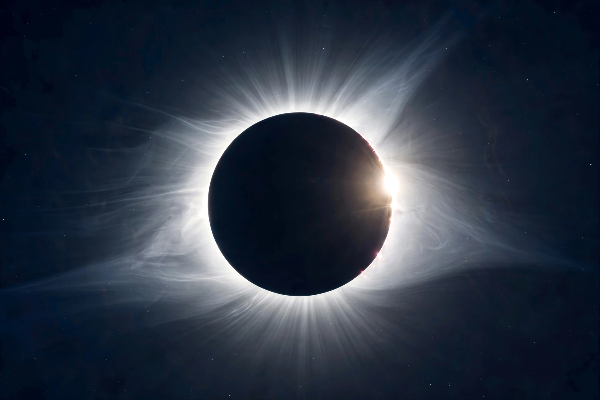

| Solar eclipse | |
|---|---|
| Occurs | At new moon, when Sun, Moon and Earth align |
| Frequency | 2–5 per year somewhere on Earth |
| Max totality duration | ~7 minutes 32 seconds (theoretical) |
| Types | Total, annular, partial, hybrid |
| Cycle | Saros (~18 years 11 days) |

A solar eclipse occurs when the Moon passes between the Sun and Earth, casting a shadow on Earth that partially or fully blocks the Sun's light in some areas. This happens only during eclipse seasons, near a new moon when the Sun, Moon and Earth are aligned (syzygy). In a total eclipse the Sun's disk is fully obscured by the Moon; in partial and annular eclipses only part of the Sun is blocked.
The Moon's shadow has two parts: the dark central umbra and the lighter penumbra. Observers in the umbra see a total eclipse, during which the solar corona, prominences and bright stars become visible and the sky darkens dramatically; totality lasts at most about seven and a half minutes. Because the Moon is receding from Earth, its apparent size sometimes falls short of covering the Sun, producing an annular eclipse — a "ring of fire". Rare hybrid eclipses shift between total and annular along their path. Remarkably, the Sun and Moon have nearly the same apparent size in Earth's sky, a coincidence of the present epoch.
Eclipses repeat in the Saros cycle of about 18 years and 11 days, known since Babylonian and Chinese antiquity. Total eclipses enabled landmark science: helium was discovered in the Sun's eclipse spectrum in 1868, and the 1919 eclipse expeditions led by Arthur Eddington measured starlight deflected by the Sun's gravity, confirming Einstein's general relativity. Today spacecraft such as SOHO observe the corona continuously, but total eclipses remain unique laboratories for studying the inner corona.
Looking directly at the Sun outside the brief total phase can permanently damage the retina. Safe viewing requires certified eclipse glasses meeting the ISO 12312-2 standard or indirect methods such as pinhole projection; ordinary sunglasses are not sufficient.
This article was recreated from memory as part of a web-reconstruction exercise.